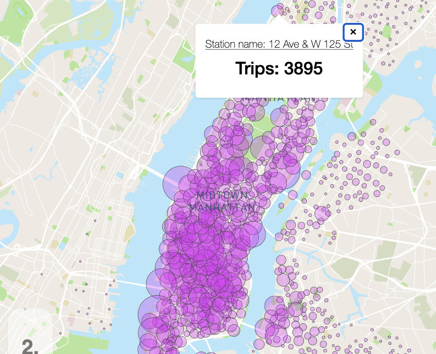
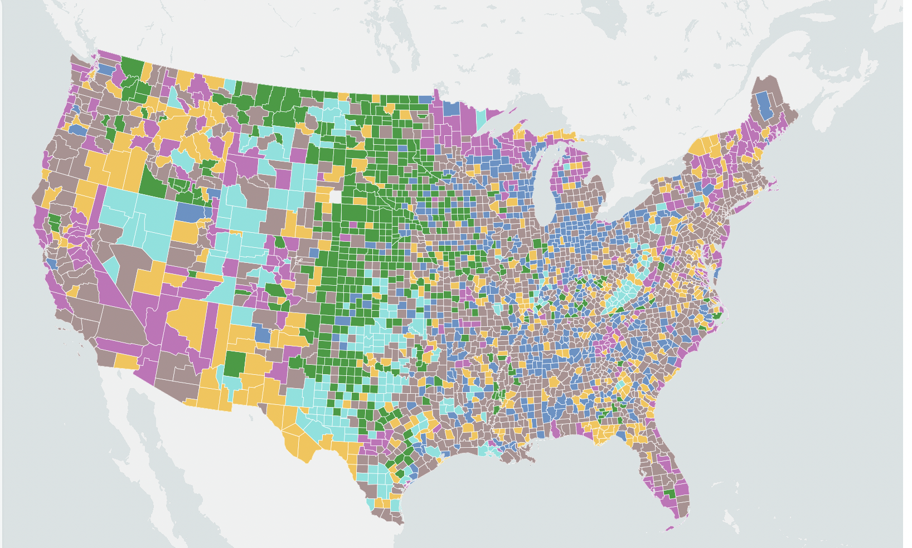

Buying a home in California? Maybe check this wildfire risk assessment first

Wildfire risks are important concerns when buying homes. For prospective homebuyers and realtors, the USDA wildfire risks dataset is a great resource in determining how much risks a homeowner may face in any county. These interactive maps were made and coded using Mapbox, HTML, CSS, Javascript. Analysis done with Python with Altair library for preliminary mapping and analysis.
US leads post-COVID reduction in gas flaring

World Bank's 2022 Global Gas Flaring data shows that the U.S., one of the top contributors to gas flaring among oil producing nations of the world, reduced its gas flaring by over 3 billion cubic meters in 2021. I coded this map with Mapbox, Javascript and HTML and I experimented with the winkelTripel projection.
Where Citibike rides started and ended in Sep 2020 & 2021
In this mapping classwork, I downloaded citibike datasets from citibikenyc, styled a Mapbox template and used Javascript, CSS and HTML to code the location of stations which registered the start and arrival of citibike rides in Sep 2020 and Sep 2021.
2020 presidential election results in maps

This classwork entails mapping the 2020 election with the use of Mapbox GL JS and writing the HTML, CSS and Javascript code from scratch to produce a choropleth map and a graduated point map.
Mapping county typology and police brutality
An interactive typology map of US counties and a simple also interactive point map of reported police brutality incidents during the George Floyd protests. Made and coded with Mapbox, Javascript, CSS and HTML.